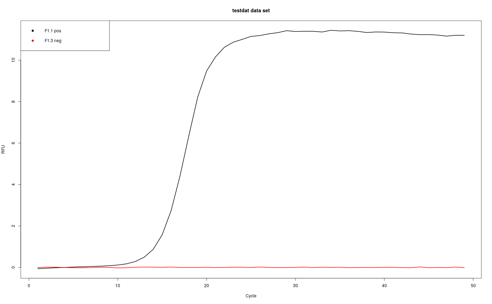

visdat_pcrfit.RdIn all data science projects it is important to look at a new dataset to gain an insight into what is contained therein and, which potential problems might emerge during the further analysis. The ``pcrfit_single()`` function uses various algorithms to calculate parameters (features) that are returned as factors (e. g., fitted model) or numbers (e. g., Cq value). In some cases are selected algorithms not able to calculate certain features. As a result missing values (NA) are extreme values are output instead. ``visdat_pcrfit()`` function gives a `ggplot` or interactive `ggplotly` object (default) of a 'pcrfit_single' data frame. The function is based on the vis_dat function by Tierney (2017) and creates heatmap-like visualizations. The Heatmapt displays each amplification curve line by line and reads from top to bottom. The characteristics are presented column by column. The structure of the output is the same as for the ``pcrfit_single()`` and ``encu()`` functions. The colored indicators show the class (e.g., missing values, factors).
visdat_pcrfit(data, type = "all", interactive = TRUE)
| data | contains the result from an analysis with the pcrfit_single function |
|---|---|
| type | specifies of all or only a subset of results should be shown, Default: 'all'. Alternatives 'qpcR' or 'amptester' |
| interactive | is a logical parameter, which indicates if the plot should be interactive, Default: TRUE |
type 'all' shows all results from the analysis by the pcrfit_single function.
N. Tierney, visdat: Visualising Whole Data Frames, The Journal of Open Source Software. 2 (2017). doi:10.21105/joss.00355.
# First Example # The observations "A01", "A02", "A04" and "B04" from the # ``C126EG685`` dataset were analyzed with the ``encu()`` # function. Finally, the data were visualized with the # ``visdat_pcrfit()`` function. In this example the static # plot is shown (\autoref{visdat_pcrfit_plot}). It is also # possible to run the function interactively by setting the # parameter `interactive=TRUE`. In this case starts an # interactive, browser-based charting library that uses # ECMA Script. The interactive plot are rendered entirely # locally, through a HTML widgets framework. # Calculate curve features of an amplification curve # dataset. Use the C126EG685 dataset from the chipPCR # package and analyze the observationsA01, A02, A04 and B05.# NOT RUN { library(chipPCR) library(PCRedux) res <- encu(C126EG685[, c(1,2,3,5,17)]) # Show all results in a plot. Note that the interactive parameter is set to # FALSE. For each observation, the classes (factor, # integer, logical, numeric, NA) are presented. # For the observations 2 and 4 the parameter # `loglin\\_slope` could not be calculated (returned NA). visdat_pcrfit(res, type = "all", interactive = FALSE) # }# Second Example # Calculate curve features of an amplification curve data. Note that not all # available CPU cores are used. If need set "all" to use all available cores. library(qpcR) # take the samples F1.1 (positive) and F1.3 (negative) for this example. test_data <- testdat[, c(1,2,4)] # Plot the amplification curves matplot(test_data[, 1], test_data[, -1], xlab="Cycle", ylab="RFU", main="testdat data set", type="l", lty=1, lwd=2, col=1:2)legend("topleft", paste(colnames(test_data)[-1], c("pos", "neg")), pch=19, col=1:2)# Analyze the amplification curves with the pcrfit_single function res_1 <- cbind(runs="F1.1", pcrfit_single(test_data[, 2])) res_2 <- cbind(runs="F1.3", pcrfit_single(test_data[, 3])) res <- rbind(F1.1=res_1, F1.3=res_2) # Show all results in an interactive plot visdat_pcrfit(res)